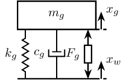
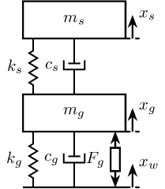
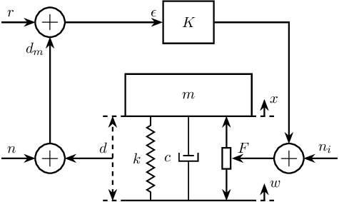
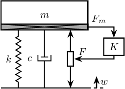
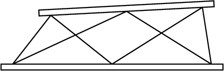

Tikz - Mechanical Systems
Table of Contents
1 Mass-Spring Systems
1.1 One mass
\def\massw{2.2} % Width of the masses \def\massh{0.8} % Height of the masses \def\spaceh{1.4} % Height of the springs/dampers \def\dispw{0.3} % Width of the dashed line for the displacement \def\disph{0.5} % Height of the arrow for the displacements \def\bracs{0.05} % Brace spacing vertically \def\brach{-10pt} % Brace shift horizontaly
\draw (-0.5*\massw, 0) -- (0.5*\massw, 0); \draw[dashed] (0.5*\massw, 0) -- ++(\dispw, 0); \draw[->] (0.5*\massw+0.5*\dispw, 0) -- ++(0, \disph) node[right]{$x_{w}$};
% Mass \draw[fill=white] (-0.5*\massw, \spaceh) rectangle (0.5*\massw, \spaceh+\massh) node[pos=0.5]{$m_{g}$}; % Spring, Damper, and Actuator \draw[spring] (-0.4*\massw, 0) -- (-0.4*\massw, \spaceh) node[midway, left=0.1]{$k_{g}$}; \draw[damper] (0, 0) -- ( 0, \spaceh) node[midway, left=0.2]{$c_{g}$}; \draw[actuator] ( 0.4*\massw, 0) -- ( 0.4*\massw, \spaceh) node[midway, left=0.1](F){$F_{g}$}; % Displacements \draw[dashed] (0.5*\massw, \spaceh) -- ++(\dispw, 0); \draw[->] (0.5*\massw+0.5*\dispw, \spaceh) -- ++(0, \disph) node[right]{$x_{g}$}; % Legend % \draw[decorate, decoration={brace, amplitude=8pt}, xshift=\brach] % % (-0.5*\massw, \bracs) -- (-0.5*\massw, \spaceh+\massh-\bracs) % % node[midway,rotate=90,anchor=south,yshift=10pt]{};

1.2 Two masses
\begin{tikzpicture} % ==================== % Parameters % ==================== \def\massw{2.2} % Width of the masses \def\massh{0.8} % Height of the masses \def\spaceh{1.2} % Height of the springs/dampers \def\dispw{0.3} % Width of the dashed line for the displacement \def\disph{0.5} % Height of the arrow for the displacements \def\bracs{0.05} % Brace spacing vertically \def\brach{-10pt} % Brace shift horizontaly % ==================== % ==================== % Ground % ==================== \draw (-0.5*\massw, 0) -- (0.5*\massw, 0); \draw[dashed] (0.5*\massw, 0) -- ++(\dispw, 0); \draw[->] (0.5*\massw+0.5*\dispw, 0) -- ++(0, \disph) node[right]{$x_{w}$}; % ==================== \begin{scope}[shift={(0, 0)}] % Mass \draw[fill=white] (-0.5*\massw, \spaceh) rectangle (0.5*\massw, \spaceh+\massh) node[pos=0.5]{$m_{g}$}; % Spring, Damper, and Actuator \draw[spring] (-0.4*\massw, 0) -- (-0.4*\massw, \spaceh) node[midway, left=0.1]{$k_{g}$}; \draw[damper] (0, 0) -- ( 0, \spaceh) node[midway, left=0.2]{$c_{g}$}; \draw[actuator] ( 0.4*\massw, 0) -- ( 0.4*\massw, \spaceh) node[midway, left=0.1](F){$F_{g}$}; % Displacements \draw[dashed] (0.5*\massw, \spaceh) -- ++(\dispw, 0); \draw[->] (0.5*\massw+0.5*\dispw, \spaceh) -- ++(0, \disph) node[right]{$x_{g}$}; % Legend % \draw[decorate, decoration={brace, amplitude=8pt}, xshift=\brach] % % (-0.5*\massw, \bracs) -- (-0.5*\massw, \spaceh+\massh-\bracs) % % node[midway,rotate=90,anchor=south,yshift=10pt]{}; \end{scope} \begin{scope}[shift={(0, \spaceh+\massh)}] % Mass \draw[fill=white] (-0.5*\massw, \spaceh) rectangle (0.5*\massw, \spaceh+\massh) node[pos=0.5]{$m_{s}$}; % Spring, Damper, and Actuator \draw[spring] (-0.4*\massw, 0) -- (-0.4*\massw, \spaceh) node[midway, left=0.1]{$k_{s}$}; \draw[damper] (0, 0) -- ( 0, \spaceh) node[midway, left=0.2]{$c_{s}$}; % Displacements \draw[dashed] (0.5*\massw, \spaceh) -- ++(\dispw, 0); \draw[->] (0.5*\massw+0.5*\dispw, \spaceh) -- ++(0, \disph) node[right]{$x_{s}$}; % Legend % \draw[decorate, decoration={brace, amplitude=8pt}, xshift=\brach] % % (-0.5*\massw, \bracs) -- (-0.5*\massw, \spaceh+\massh-\bracs) % % node[midway,rotate=90,anchor=south,yshift=10pt]{}; \end{scope} \end{tikzpicture}

1.3 Three masses
\begin{tikzpicture} % ==================== % Parameters % ==================== \def\massw{2.2} % Width of the masses \def\massh{0.8} % Height of the masses \def\spaceh{1.2} % Height of the springs/dampers \def\dispw{0.3} % Width of the dashed line for the displacement \def\disph{0.5} % Height of the arrow for the displacements \def\bracs{0.05} % Brace spacing vertically \def\brach{-10pt} % Brace shift horizontaly % ==================== % ==================== % Ground % ==================== \draw (-0.5*\massw, 0) -- (0.5*\massw, 0); \draw[dashed] (0.5*\massw, 0) -- ++(\dispw, 0); \draw[->] (0.5*\massw+0.5*\dispw, 0) -- ++(0, \disph) node[right]{$x_{w}$}; % ==================== % Granite \begin{scope}[shift={(0, 0)}] % Mass \draw[fill=white] (-0.5*\massw, \spaceh) rectangle (0.5*\massw, \spaceh+\massh) node[pos=0.5]{$m_{g}$}; % Spring, Damper, and Actuator \draw[spring] (-0.4*\massw, 0) -- (-0.4*\massw, \spaceh) node[midway, left=0.1]{$k_{g}$}; \draw[damper] (0, 0) -- ( 0, \spaceh) node[midway, left=0.2]{$c_{g}$}; \draw[actuator] ( 0.4*\massw, 0) -- ( 0.4*\massw, \spaceh) node[midway, left=0.1](F){$F_{g}$}; % Displacements \draw[dashed] (0.5*\massw, \spaceh) -- ++(\dispw, 0); \draw[->] (0.5*\massw+0.5*\dispw, \spaceh) -- ++(0, \disph) node[right]{$x_{g}$}; % Legend % \draw[decorate, decoration={brace, amplitude=8pt}, xshift=\brach] % % (-0.5*\massw, \bracs) -- (-0.5*\massw, \spaceh+\massh-\bracs) % % node[midway,rotate=90,anchor=south,yshift=10pt]{Support}; \end{scope} % Stages \begin{scope}[shift={(0, \spaceh+\massh)}] % Mass \draw[fill=white] (-0.5*\massw, \spaceh) rectangle (0.5*\massw, \spaceh+\massh) node[pos=0.5]{$m_{s}$}; % Spring, Damper, and Actuator \draw[spring] (-0.4*\massw, 0) -- (-0.4*\massw, \spaceh) node[midway, left=0.1]{$k_{s}$}; \draw[damper] (0, 0) -- ( 0, \spaceh) node[midway, left=0.2]{$c_{s}$}; % Displacements \draw[dashed] (0.5*\massw, \spaceh) -- ++(\dispw, 0); \draw[->] (0.5*\massw+0.5*\dispw, \spaceh) -- ++(0, \disph) node[right]{$x_{s}$}; % Legend % \draw[decorate, decoration={brace, amplitude=8pt}, xshift=\brach] % % (-0.5*\massw, \bracs) -- (-0.5*\massw, \spaceh+\massh-\bracs) % % node[midway,rotate=90,anchor=south,yshift=10pt]{Actuator}; \end{scope} % Hexapod \begin{scope}[shift={(0, 2*(\spaceh+\massh))}] % Mass \draw[fill=white] (-0.5*\massw, \spaceh) rectangle (0.5*\massw, \spaceh+\massh) node[pos=0.5]{$m_{v}$}; % Spring, Damper, and Actuator \draw[spring] (-0.4*\massw, 0) -- (-0.4*\massw, \spaceh) node[midway, left=0.1]{$k_{v}$}; \draw[damper] (0, 0) -- ( 0, \spaceh) node[midway, left=0.2]{$c_{v}$}; % Displacements \draw[dashed] (0.5*\massw, \spaceh) -- ++(\dispw, 0); \draw[->] (0.5*\massw+0.5*\dispw, \spaceh) -- ++(0, \disph) node[right]{$x_{v}$}; % Legend % \draw[decorate, decoration={brace, amplitude=8pt}, xshift=\brach] % % (-0.5*\massw, \bracs) -- (-0.5*\massw, \spaceh+\massh-\bracs) % % node[midway,rotate=90,anchor=south,yshift=10pt]{Flexibility}; \end{scope} \end{tikzpicture}

2 Control Based on distance measurement
\begin{tikzpicture} % Parameters \def\massw{3} \def\massh{1} \def\spaceh{2} % Ground \draw[] (-0.5*\massw, 0) -- (0.5*\massw, 0); % Mass \draw[] (-0.5*\massw, \spaceh) rectangle (0.5*\massw, \spaceh+\massh) node[pos=0.5](m){$m$}; % Spring, Damper, and Actuator \draw[spring] (-0.3*\massw, 0) -- (-0.3*\massw, \spaceh) node[midway, left=0.1]{$k$}; \draw[damper] ( 0, 0) -- ( 0, \spaceh) node[midway, left=0.3]{$c$}; \draw[actuator] ( 0.3*\massw, 0) -- ( 0.3*\massw, \spaceh) node[midway](F){}; % Displacements \draw[dashed] (0.5*\massw, 0) -- ++(0.2*\massw, 0); \draw[->] (0.6*\massw, 0) -- ++(0, 0.2*\spaceh) node[right]{$w$}; \draw[dashed] (0.5*\massw, \spaceh) -- ++(0.2*\massw, 0); \draw[->] (0.6*\massw, \spaceh) -- ++(0, 0.2*\spaceh) node[right]{$x$}; % Measurement \draw[dashed] (-0.5*\massw, 0) -- ++(-0.2*\massw, 0); \draw[dashed] (-0.5*\massw, \spaceh) -- ++(-0.2*\massw, 0); \draw[dashed, <->] (-0.6*\massw, 0) -- ++(0, \spaceh) node[midway](meas){}; % Noise \node[addb, left=1 of meas] (addn) {}; \draw[->] (meas.center) node[above left]{$d$} -- (addn.east); \draw[<-] (addn.west) -- ++(-0.8, 0) node[above right]{$n$}; % Controller \node[block, above=1 of m] (K) {$K$}; % Reference signal \node[addb] (addr) at (addn|-K){}; \draw[<-] (addr.west) -- ++(-0.8, 0) node[above right]{$r$}; \draw[->] (addn.north) -- (addr.south) node[below left]{$d_m$}; \draw[->] (addr.east) -- (K.west) node[above left]{$\epsilon$}; % Force injected and input noise \node[addb, right=1 of F] (addF) {}; \draw[->] (K.east) -| (addF.north); \draw[->] (addF.west) -- (F.east) node[above right]{$F$}; \draw[<-] (addF.east) -- ++(0.8, 0) node[above left]{$n_i$}; \end{tikzpicture}

3 Inertial Control
\begin{tikzpicture} % Parameters \def\massw{3} \def\massh{1} \def\spaceh{2} % Ground \draw[] (-0.5*\massw, 0) -- (0.5*\massw, 0); % Mass \draw[] (-0.5*\massw, \spaceh) rectangle (0.5*\massw, \spaceh+\massh) node[pos=0.5](m){$m$}; % Spring, Damper, and Actuator \draw[spring] (-0.3*\massw, 0) -- (-0.3*\massw, \spaceh) node[midway, left=0.1]{$k$}; \draw[damper] ( 0, 0) -- ( 0, \spaceh) node[midway, left=0.3]{$c$}; \draw[actuator] ( 0.3*\massw, 0) -- ( 0.3*\massw, \spaceh) node[midway](F){}; % Displacements \draw[dashed] (0.5*\massw, 0) -- ++(0.2*\massw, 0); \draw[->] (0.6*\massw, 0) -- ++(0, 0.2*\spaceh) node[below right]{$w$}; % Inertial Sensor \node[inertialsensor] (inertials) at (0.5*\massw, \spaceh+\massh){}; \node[block, above right=0.5*\massh and 1 of F.east] (K){$K$}; \draw[->] (inertials.east) node[above right]{$x$} -| (K.north); \draw[->] (K.south) |- (F.east) node[above right]{$F$}; \end{tikzpicture}

4 Force Feedback Control
\begin{tikzpicture} % Parameters \def\massw{3} \def\massh{1} \def\spaceh{2} % Ground \draw[] (-0.5*\massw, 0) -- (0.5*\massw, 0); % Mass \draw[] (-0.5*\massw, \spaceh) rectangle (0.5*\massw, \spaceh+\massh) node[pos=0.5](m){$m$}; % Spring, Damper, and Actuator \draw[spring] (-0.3*\massw, 0) -- (-0.3*\massw, \spaceh) node[midway, left=0.1]{$k$}; \draw[damper] ( 0, 0) -- ( 0, \spaceh) node[midway, left=0.3]{$c$}; \draw[actuator] ( 0.3*\massw, 0) -- ( 0.3*\massw, \spaceh) node[midway](F){}; % Force Sensor \node[forcesensor={\massw}{0.2}] (fsens) at (0, \spaceh){}; % Displacements \draw[dashed] (0.5*\massw, 0) -- ++(0.2*\massw, 0); \draw[->] (0.6*\massw, 0) -- ++(0, 0.2*\spaceh) node[below right]{$w$}; \node[block={0.7cm}{0.6cm}, above right=0.1*\massh and 1 of F.east] (K){$K$}; \draw[->] (fsens.east) node[above right]{$F_m$} -| (K.north); \draw[->] (K.south) |- (F.east) node[above right]{$F$}; \end{tikzpicture}

5 Stewart Platform
\begin{tikzpicture} \newcommand{\AxisRotator}[1][rotate=0]{% \tikz [x=0.25cm,y=0.60cm,line width=.2ex,-stealth,#1] \draw (0,0) arc (-150:150:1 and 1);% } % Parameters definitions \def\baseh{0.2} % Height of the base \def\naceh{0.2} % Height of the nacelle \def\baser{3.8} % Radius of the base \def\nacer{3.0} % Radius of the nacelle \def\armr{0.2} % Radius of the arms \def\basearmborder{0.2} \def\nacearmborder{0.2} \def\xnace{0.5} % X position of the nacelle \def\ynace{2.0} % Y position of the nacelle \def\anace{3.0} % Angle of the nacelle \def\xbase{0.0} % X position of the base \def\ybase{0.0} % Y position of the base \def\abase{0.0} % Angle of the base % Hexapod1 \begin{scope}[shift={(\xbase, \ybase)}, rotate=\abase] % Base \draw[] (-\baser, 0) rectangle (\baser, \baseh); \coordinate[] (armbasel) at (-\baser+\basearmborder+\armr, \baseh); \coordinate[] (armbasec) at (0, \baseh); \coordinate[] (armbaser) at (\baser-\basearmborder-\armr, \baseh); % Nacelle1 \begin{scope}[shift={(\xnace, \ynace)}, rotate=\anace] \draw[] (-\nacer, 0) rectangle (\nacer, \naceh); \coordinate[] (armnacel) at (-\nacer+\nacearmborder+\armr, 0); \coordinate[] (armnacec) at (0, 0); \coordinate[] (armnacer) at (\nacer-\nacearmborder-\armr, 0); \end{scope} % Nacelle1 END \draw[] (armbasec) -- (armnacer); \draw[] (armbasec) -- (armnacel); \draw[] (armbasel) -- (armnacel); \draw[] (armbasel) -- (armnacec); \draw[] (armbaser) -- (armnacec); \draw[] (armbaser) -- (armnacer); \end{scope} \end{tikzpicture}
